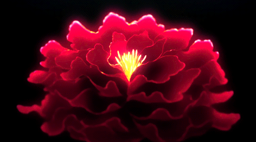
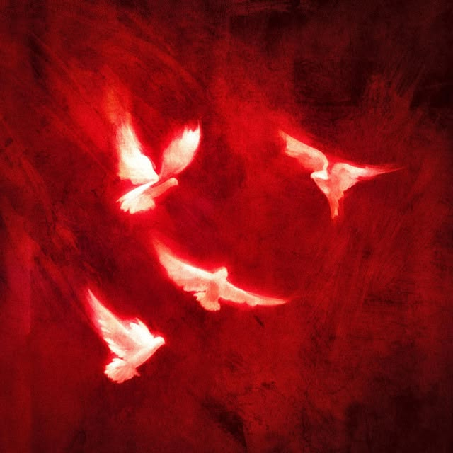
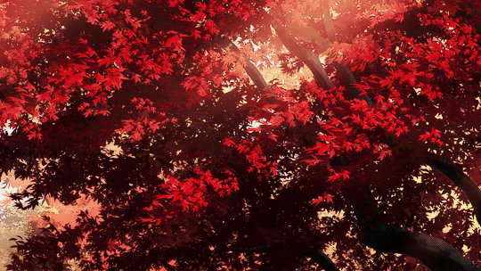
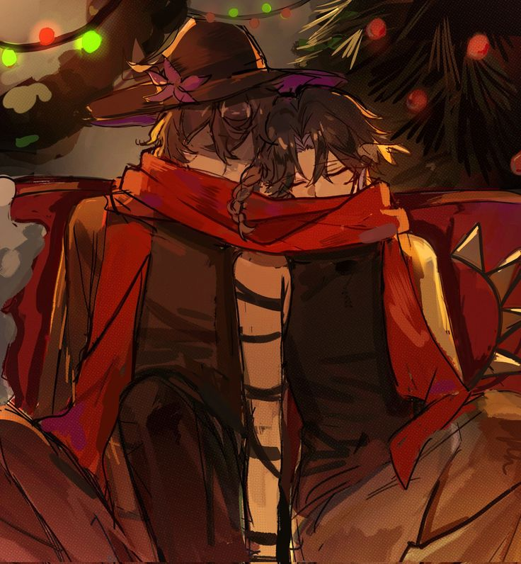

Joji
Like you Do de Joji habla de alguien que, de un tiempo a otro, no puede dejar de pensar en si lo que tienen, terminará y cada uno tomará un rumbo distinto.
"Lately, I can't help but think"
"That our roads might take us down different phases"
No quiere estorbar ni complicar lo bonito que llevan, pero no le sale decir nada, se queda sin palabras. Irónico a mi situación, a veces siento que te molesto, a veces siento que soy pesada o intensa y no quiero que eso arruine lo que hemos armado, con tiempo, cuando más me conoces mas sabes de mi. Me da miedo en un futuro que lo nuestro no sea eterno, pero constantemente te diré que por ahora no pienso soltarte, hasta que tú lo hagas primero, yo estaré ahí.
"Don't wanna complicate the rhythm that we've got"

La canción también toca el tema de ese alguien que le aterra la idea de que esa persona se vaya, porque entonces hasta las canciones que más les gustaban se volverían algo agridulce, temo también con aquella idea sabes? Porque nadie me ha querido como lo has hecho tú, nadie me hace sentir esas cosas que antes me parecían tan especiales y que ahora entiendo que sin ti no son nada.
"Lost in the blue"
"They don't love me like you do"
Desde que te conocí, hasta los días más grises parecen de alguna forma los más brillantes ahora, y por eso valoro mucho lo que tenemos. Puede parecer corto pero esta canción más que nada la puse en la playlist por aquello mismo, el coro. Nadie me ha querido antes como lo estás haciendo tú conmigo, paciencia.
"Since I met you"
"All the gloomy days just seem to shine a little more brightly"
No quiero parecer un tonto
⸻
"I don't wanna seem foolish"
•| ⊱✿⊰ |•
Cuando me estoy ilusionando con esto
⸻
"When I'm jumping into this"
♥
Eres todo lo que veo
⸻
"You're all that I see"